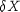
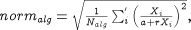

InitialisationNLSolver: A quoted string specifying a nonlinear algebraic equation solver.
The solver to be used for the solution of nonlinear algebraic equations occurring at the initialisation stage of the integration. This can be either one of the standard gPROMS nonlinear algebraic equation solver or a third-party nonlinear algebraic equation solver (see the gPROMS System Programmer Guide). The default is BDNLSOL. This parameter can be followed by further specifications aimed at configuring the particular solver by setting values to its own algorithmic parameters.
LASolver: A quoted string specifying a linear algebraic equation solver.
The solver to be used for the solution of linear algebraic equations at each step of the integration. This can be either one of the standard gPROMS linear algebraic equation solvers or a third-party linear algebraic equation solver (see the gPROMS System Programmer Guide). The default is MA48. This parameter can be followed by further specifications aimed at configuring the particular solver by setting values to its own algorithmic parameters.
ReinitialisationNLSolver: A quoted string specifying a nonlinear algebraic equation solver.
The solver to be used for the solution of nonlinear algebraic equations that is necessary for re-initialisation following discontinuities. This can be either one of the standard gPROMS nonlinear algebraic equation solvers or a third-party nonlinear algebraic equation solver (see the gPROMS System Programmer Guide). The default is SPARSE. This parameter can be followed by further specifications aimed at configuring the particular solver by setting values to its own algorithmic parameters.
AbsoluteTolerance: A real number in the range [10-20, 1010].
The absolute integration tolerance. Together with the parameter RelativeTolerance (see below), they determine whether or not a time step taken by the solver is sufficiently accurate.
Diag: A boolean value.
Specifies whether very detailed diagnostic information is to be generated during integration.
EventTolerance: A real number in the range [10-20, 1010].
The event tolerance, i.e. the maximum time interval within which discontinuities during integration are located.
MaxStepSize: A real number in the range [10-20, 10100]; default = 1010.
This Solution Parameter sets the maximum step size used by the integrator when advancing in time.
OutputLevel: An integer in the range [0, 4].
The amount of information generated by the solver. The following table indicates the lowest level at which different types of information are produced:
| 0 | (None) |
| 1 | (Re-)initialisation times, projection of predictor onto bounds, variables hitting bounds |
| 2 | Successful initialisation, change of branch in IF conditional equations, location of discontinuities, step failures, repeated convergence failures, predictor outside bounds, predictor step reduction, variables stuck on bounds |
| 3 | Detail of convergence failures,values of derivatives on commencing integration, number of perturbation groups, step length reduction due to bounds violation |
| 4 | Variable causing discontinuity, detail of perturbation groups |
RelativeTolerance: A real number in the range [10-20, 1010].
The relative integration tolerance. Together with the parameter AbsoluteTolerance (see above), they determine whether or not a time step taken by the solver is sufficiently accurate.
VariablesWithLargestCorrectorSteps: An integer between 0 and 1000; default = 0.
On rare occasions, SRADAU fails with a "corrector step failure" message. This indicates that the code is unable to establish a set of variable values that satisfy the system equations at a particular point. It is often caused by errors or bad scaling in some modelling equations which results in the corrector iterations taking excessively large steps in some of the variables. To help with the diagnosis of such problems, SRADAU can report the variables with the largest relative change at each corrector iteration. The relative change for a variable X is defined as:

where:
-
 is the step in the variable at this corrector iteration;
-
a is the absolute tolerance;
-
r is the relative tolerance.
The parameter VariablesWithLargestCorrectorSteps specifies the number of variables to be reported in this manner. Note that such reporting takes place only if the parameter OutputLevel is set to a value of 0 or higher.
An example of the output is shown below:
Variables with largest (weighted) corrector steps follow... Differential and algebraic variables (norm = 227.542): ---------------------------------------------------------------------------------------------------------------------------------- | Variable | Name | Current Value | Corrector Step | Weighted Corrector Step | Contribution to Norm | ---------------------------------------------------------------------------------------------------------------------------------- | 1 | Plant.Reactor.STR.rho_L | 12126 | 548.071 | 4519.44 | 50.00% | | 2 | Plant.Reactor.STR.c(5) | 12126 | 548.071 | 4519.44 | 50.00% | | 3 | Plant.Reactor.STR.vol_L | 0.000824675 | -3.72737E-05 | -3.7243 | 0.00% | | 4 | Plant.Reactor.STR.q_Loss | 0.00692394 | -6.05969E-06 | -0.601802 | 0.00% | | 5 | Plant.Reactor.STR.ThermoHL.hli(2) | -5.12137E-10 | -1.41695E-06 | -0.141695 | 0.00% | ---------------------------------------------------------------------------------------------------------------------------------- Algebraic variables only (norm = 250.308): ---------------------------------------------------------------------------------------------------------------------------------- | Variable | Name | Current Value | Corrector Step | Weighted Corrector Step | Contribution to Norm | ---------------------------------------------------------------------------------------------------------------------------------- | 1 | Plant.Reactor.STR.rho_L | 12126 | 548.071 | 4519.44 | 50.00% | | 2 | Plant.Reactor.STR.c(5) | 12126 | 548.071 | 4519.44 | 50.00% | | 3 | Plant.Reactor.STR.vol_L | 0.000824675 | -3.72737E-05 | -3.7243 | 0.00% | | 4 | Plant.Reactor.STR.q_Loss | 0.00692394 | -6.05969E-06 | -0.601802 | 0.00% | | 5 | Plant.Reactor.STR.ThermoHL.hli(2) | -5.12137E-10 | -1.41695E-06 | -0.141695 | 0.00% | ----------------------------------------------------------------------------------------------------------------------------------
The output is grouped in terms of differential and algebraic Variables and only algebraic Variables. In each case, a norm value is also reported. For differential and algebraic variables, this is defined by:

where N is the number of equations. Subsequent lines list the largest
VariablesWithLargestCorrectorSteps Variables and their relative changes.
For algebraic Variables only, then norm is similarly defined:

where Nalg is the number of algebraic Variables and the summation is over only the algebraic Variables. Again, a list of the algebraic variables with the largest corrector steps then follows.